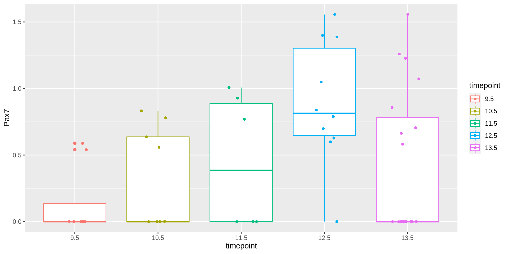
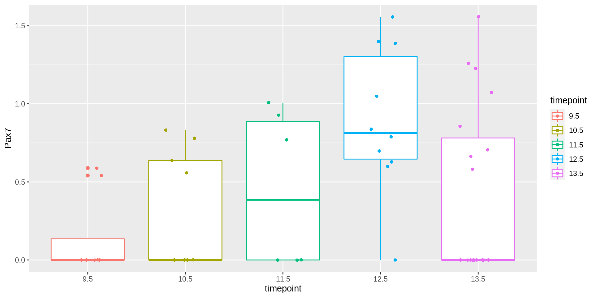
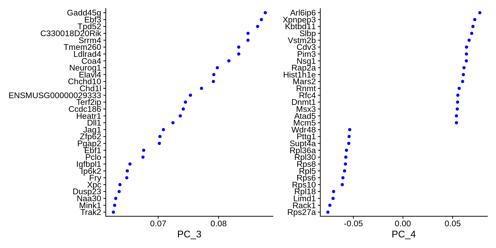

Chapter 8 Analyse dp5 population
8.1 Population selection
Idents(data_seurat) <- 'Type_step2'
data_sub <- subset(data_seurat, idents = pop)
dim(data_sub)## [1] 20082 52Idents(data_seurat) <- 'individual'
table(data_sub@meta.data$individual)##
## 9.5_1 9.5_2 10.5_1 10.5_2 11.5_1 11.5_2 12.5_1 12.5_2 12.5_3 13.5_1 13.5_2
## 6 2 7 2 2 4 1 6 3 4 6
## 13.5_3
## 9barplot(table(data_sub@meta.data$individual))table(data_sub@meta.data$gender)##
## F M
## 28 24table(data_sub@meta.data$seurat_clusters)##
## 0 1 2 3 4 5 6 7 8 9 10 11
## 0 14 9 0 21 8 0 0 0 0 0 0table(data_sub@meta.data$kmeanClust_3)##
## Clust.2
## 528.2 Visualize on main UMAP
8.2.1 Use already computed values
metadataD <- c('individual', 'gender', 'Phase', 'seurat_clusters', 'timepoint')
metadataC <- c('Pseudotime', 'Progenitors_1', 'Neurons_1')
for (md in metadataD){
print(DimPlot(object = data_sub, group.by = md))
}for (mc in metadataC){
print(FeaturePlot(object = data_sub,
features = mc,
cols = c("lightblue", "yellow2", "red"),
reduction = "umap"))
}plotBlend <- FeaturePlot(object = data_sub,
features = c("Sox2", "Btg2"),
blend = TRUE,
reduction = "umap")
plotBlend[[1]]plotBlend[[2]]plotBlend[[3]]plotBlend[[4]]
#ggplot(data_sub@meta.data, aes(x = Neurons_1, y = Phase, color = Type_step2)) +
# geom_point()8.2.2 Plot known markers
feat <- c('Btg2',
'Sox1',
'Sox2',
'Sox3',
'Tubb3',
'Olig2',
'Pax6',
'Pax7',
'Isl1',
'Notch1',
'Dll1',
'Cdc25b',
'Mib1',
'Shh',
'Gli1')
plotMarker <- FeaturePlot(object = data_sub,
features = feat,
order = TRUE,
cols = c("lightblue", "yellow2", "red"),
reduction = "umap",
ncol = 2)for (i in 1:length(plotMarker)){
plot1 <- ggplot(data_sub@meta.data, aes_string(x = "timepoint", y = feat[i], color = "timepoint")) +
geom_boxplot() +
geom_jitter(shape=16, position=position_jitter(0.2))
plot2 <- ggplot(data_sub@meta.data, aes_string(x = "as.numeric(Pseudotime)", y = feat[i], color = "Phase")) +
geom_point(size = 0.8) +
scale_x_continuous() +
geom_smooth(method='loess', show.legend = TRUE, se=FALSE, fullrange=FALSE, level=0.95) +
theme_minimal() +
theme(legend.position = "bottom")
plot2 <- data_sub@meta.data %>% filter(get(feat[i]) > 0) %>% ggplot(aes_string(x = "as.numeric(Pseudotime)", y = feat[i], color = "Phase")) +
geom_point(size = 0.8) +
scale_x_continuous() +
geom_smooth(method='loess', show.legend = TRUE, se=FALSE, fullrange=FALSE, level=0.95) +
theme_minimal() +
theme(legend.position = "bottom")
print(plot1)
print(plot2)
print(plotMarker[[i]])
} 

8.3 Find HV genes
# prepare data
data_sub <- NULL
Idents(data_seurat) <- 'Type_step2'
data_sub <- subset(data_seurat, idents = pop)
data_sub <- CreateSeuratObject(counts = data_sub@assays$RNA@counts,
meta.data = data_sub@meta.data,
min.cells = 2)
dim(data_sub)## [1] 10113 52# scale data before clustering
data_sub <- NormalizeData(object = data_sub, normalization.method = "LogNormalize", scale.factor = 1e4)
data_sub <- ScaleData(data_sub, vars.to.regress = c("pct_counts_MT", "gender"))
data_sub <- FindVariableFeatures(data_sub, selection.method = "vst", nfeatures = 2000)
top <- head(VariableFeatures(data_sub), 30)
plot1 <- VariableFeaturePlot(data_sub)
plot2 <- LabelPoints(plot = plot1, points = top, repel = TRUE)
plot28.4 PCA on dp5
data_sub <- RunPCA(data_sub, features = VariableFeatures(object = data_sub), npcs = 30)
ElbowPlot(data_sub, ndims = 30, reduction = 'pca')VizDimLoadings(data_sub, dims = 1:2, reduction = "pca")VizDimLoadings(data_sub, dims = 3:4, reduction = "pca")
for (md in metadataD){
print(DimPlot(object = data_sub, group.by = md, reduction = "pca", dims = c(1,2)))
print(DimPlot(object = data_sub, group.by = md, reduction = "pca", dims = c(3,4)))
}for (i in seq(1, 4, 1)){
print(DimHeatmap(data_sub, dims = i, balanced = TRUE))
}## NULL## NULL## NULL## NULLfor (md in metadataD){
print(FeatureScatter(object = data_sub, "Btg2", "Sox2", group.by = md))
}8.5 Specific UMAP
data_sub <- RunUMAP(data_sub, features = VariableFeatures(object = data_sub))
for (md in metadataD){
print(DimPlot(object = data_sub, group.by = md, reduction = "umap"))
}8.6 Clustering
# clustering
data_sub <- FindNeighbors(data_sub, dims = 1:20)
data_sub <- FindClusters(data_sub, resolution = 0.6)## Modularity Optimizer version 1.3.0 by Ludo Waltman and Nees Jan van Eck
##
## Number of nodes: 52
## Number of edges: 1215
##
## Running Louvain algorithm...
## Maximum modularity in 10 random starts: 0.4253
## Number of communities: 2
## Elapsed time: 0 secondsDimPlot(data_sub, reduction = "umap")markers <- FindAllMarkers(data_sub, only.pos = TRUE, min.pct = 0.25, logfc.threshold = 0.25)
top10 <- markers %>% group_by(cluster) %>% top_n(n = 10, wt = avg_log2FC)
print(DoHeatmap(data_sub, features = top10$gene, draw.lines = TRUE, size = 4) +
NoLegend())write.table(markers, file = paste0("../../", path_output, "markers_", pop, ".tsv"), sep = '\t', quote=FALSE, row.names = TRUE, col.names = NA)
saveRDS(markers, file = paste0("../../", path_output, "markers_", pop, ".rds"))
ordered <- markers[order(markers$avg_log2FC, decreasing = TRUE),]
DT::datatable(ordered, options = list(scrollX = TRUE))8.7 Compare Btg2- and Btg2+ populations
8.7.1 Absolute values
8.7.1.1 Btg2 binarized
plotBlend <- FeaturePlot(object = data_sub,
features = c("Sox2", "Btg2"),
blend = TRUE,
reduction = "umap")
plotBlend[[1]]plotBlend[[2]]plotBlend[[3]]plotBlend[[4]]
hist(data_sub@assays$RNA@counts['Btg2',], breaks = 100)hist(data_sub@meta.data$Btg2, breaks = 100)hist(data_sub@meta.data$Sox2, breaks = 30)sox2_df <- data_sub@meta.data$Sox2
btg2_df <- data_sub@meta.data$Btg2
length(which(btg2_df > 0))## [1] 22length(which(sox2_df > 0))## [1] 52# percentage of Btg2+ cells among Sox2+ cells
length(which(btg2_df > 0)) / length(which(sox2_df > 0))## [1] 0.4230769data_sub@meta.data$Btg2_pos <- as.numeric(colnames(data_sub) %in% colnames(data_sub[,which(btg2_df > 0)]))
table(data_sub@meta.data$Btg2_pos)##
## 0 1
## 30 22tabCount <- table(data_sub@meta.data$Btg2_pos, data_sub@meta.data$Phase)
addmargins(tabCount)##
## G1 G2M S Sum
## 0 8 9 13 30
## 1 8 9 5 22
## Sum 16 18 18 52tabCount <- tabCount %>% proportions %>% `*`(100) %>% round(2)
addmargins(tabCount)##
## G1 G2M S Sum
## 0 15.38 17.31 25.00 57.69
## 1 15.38 17.31 9.62 42.31
## Sum 30.76 34.62 34.62 100.00plotCC <- ggplot(data_sub@meta.data,
aes(x = Phase, fill = factor(Btg2_pos))) +
geom_bar(stat="count", position=position_dodge()) +
labs(y = "Number of cells", fill = "Btg2") +
scale_fill_brewer(palette = "Paired") +
theme_minimal()
plotCCIdents(data_sub) <- 'Btg2_pos'
DimPlot(data_sub, reduction = "umap", group.by = "Btg2_pos" )for (i in seq(1, 20, 2)){
print(DimPlot(data_sub, reduction = "pca", group.by = "Btg2_pos", dims = as.numeric(i):as.numeric(i+1)))
}

norm_methods <- c('wilcox', 'negbinom', 'DESeq2')
for(method in norm_methods){
markers <- FindAllMarkers(data_sub, only.pos = TRUE, min.pct = 0.1, logfc.threshold = 0.1, test.use = method)
top10 <- markers %>% group_by(cluster) %>% top_n(n = 10, wt = avg_log2FC)
print(method)
print(DoHeatmap(data_sub, features = top10$gene, draw.lines = TRUE, size = 4) +
NoLegend())
write.table(markers, file = paste0("../../", path_output, "markers_", pop, "_", method, "_bin", ".tsv"), sep = '\t', quote=FALSE, row.names = TRUE, col.names = NA)
saveRDS(markers, file = paste0("../../", path_output, "markers_", pop, "_", method, "_bin", ".rds"))
ordered <- markers[order(markers$avg_log2FC, decreasing = TRUE),]
DT::datatable(ordered, options = list(scrollX = TRUE))
}## [1] "wilcox"## [1] "negbinom"## [1] "DESeq2"8.7.1.2 Btg2 discretized
summary(btg2_df)## Min. 1st Qu. Median Mean 3rd Qu. Max.
## 0.0000 0.0000 0.0000 0.4532 0.9283 1.7989hist(btg2_df, breaks = 100)
abline(v = 0.1, col="red", lwd=3, lty=2)
abline(v = 1.5, col="red", lwd=3, lty=2)data_sub@meta.data$Btg2_discr <- btg2_df
data_sub@meta.data$Btg2_discr <- ifelse(data_sub@meta.data$Btg2_discr > 1.5,
"high", ifelse(data_sub@meta.data$Btg2_discr < 0.1, "zero", "medium"))
table(data_sub@meta.data$Btg2_discr)##
## high medium zero
## 5 17 30tabCount <- table(data_sub@meta.data$Btg2_discr, data_sub@meta.data$Phase)
addmargins(tabCount)##
## G1 G2M S Sum
## high 4 1 0 5
## medium 4 8 5 17
## zero 8 9 13 30
## Sum 16 18 18 52tabCount <- tabCount %>% proportions %>% `*`(100) %>% round(2)
addmargins(tabCount)##
## G1 G2M S Sum
## high 7.69 1.92 0.00 9.61
## medium 7.69 15.38 9.62 32.69
## zero 15.38 17.31 25.00 57.69
## Sum 30.76 34.61 34.62 99.99plotCC <- ggplot(data_sub@meta.data,
aes(x = Phase, fill = factor(Btg2_discr))) +
geom_bar(stat="count", position=position_dodge()) +
labs(y = "Number of cells", fill = "Btg2") +
scale_fill_brewer(palette = "Paired") +
theme_minimal()
plotCCDimPlot(data_sub, reduction = "umap", group.by = "Btg2_discr" )FeatureScatter(object = data_sub, "Btg2", "Sox2", group.by = "Btg2_discr")Idents(data_sub) <- 'Btg2_discr'
for (i in seq(1, 20, 2)){
print(DimPlot(data_sub, reduction = "pca", group.by = "Btg2_discr", dims = as.numeric(i):as.numeric(i+1)))
}for(method in norm_methods){
markers <- FindAllMarkers(data_sub, only.pos = TRUE, min.pct = 0.1, logfc.threshold = 0.1, test.use = method)
top10 <- markers %>% group_by(cluster) %>% top_n(n = 10, wt = avg_log2FC)
print(method)
print(DoHeatmap(data_sub, features = top10$gene, draw.lines = TRUE, size = 4) +
NoLegend())
write.table(markers, file = paste0("../../", path_output, "markers_", pop, "_", method, "_Btg2_discr", ".tsv"), sep = '\t', quote=FALSE, row.names = TRUE, col.names = NA)
saveRDS(markers, file = paste0("../../", path_output, "markers_", pop, "_", method, "_Btg2_discr", ".rds"))
ordered <- markers[order(markers$avg_log2FC, decreasing = TRUE),]
DT::datatable(ordered, options = list(scrollX = TRUE))
}## [1] "wilcox"## [1] "negbinom"## [1] "DESeq2"8.7.2 Relative values
summary(btg2_df / sox2_df)## Min. 1st Qu. Median Mean 3rd Qu. Max.
## 0.0000 0.0000 0.0000 0.2259 0.5075 1.0000hist(btg2_df / sox2_df, breaks = 100)
abline(v = 0.1, col="red", lwd=3, lty=2)
abline(v = 0.95, col="red", lwd=3, lty=2)data_sub@meta.data$Btg2_Sox2_ratio <- btg2_df / sox2_df
data_sub@meta.data$Btg2_Sox2_ratio_cat <- ifelse(data_sub@meta.data$Btg2_Sox2_ratio > 0.95,
"high", ifelse(data_sub@meta.data$Btg2_Sox2_ratio < 0.1, "zero", "medium"))
table(data_sub@meta.data$Btg2_Sox2_ratio_cat)##
## high medium zero
## 1 21 30tabCount <- table(data_sub@meta.data$Btg2_Sox2_ratio_cat, data_sub@meta.data$Phase)
addmargins(tabCount)##
## G1 G2M S Sum
## high 1 0 0 1
## medium 7 9 5 21
## zero 8 9 13 30
## Sum 16 18 18 52tabCount <- tabCount %>% proportions %>% `*`(100) %>% round(2)
addmargins(tabCount)##
## G1 G2M S Sum
## high 1.92 0.00 0.00 1.92
## medium 13.46 17.31 9.62 40.39
## zero 15.38 17.31 25.00 57.69
## Sum 30.76 34.62 34.62 100.00plotCC <- ggplot(data_sub@meta.data,
aes(x = Phase, fill = factor(Btg2_Sox2_ratio_cat))) +
geom_bar(stat="count", position=position_dodge()) +
labs(y = "Number of cells", fill = "Btg2") +
scale_fill_brewer(palette = "Paired") +
theme_minimal()
plotCCFeaturePlot(object = data_sub,
features = c("Btg2_Sox2_ratio"),
reduction = "umap",
cols = c("lightblue", "yellow2", "red"))DimPlot(data_sub, reduction = "umap", group.by = "Btg2_Sox2_ratio_cat" )FeatureScatter(object = data_sub, "Btg2", "Sox2", group.by = "Btg2_Sox2_ratio_cat")Idents(data_sub) <- 'Btg2_Sox2_ratio_cat'
for (i in seq(1, 20, 2)){
print(DimPlot(data_sub, reduction = "pca", group.by = "Btg2_Sox2_ratio_cat", dims = as.numeric(i):as.numeric(i+1)))
}for(method in norm_methods){
markers <- FindAllMarkers(data_sub, only.pos = TRUE, min.pct = 0.1, logfc.threshold = 0.1, test.use = method)
top10 <- markers %>% group_by(cluster) %>% top_n(n = 10, wt = avg_log2FC)
print(method)
print(DoHeatmap(data_sub, features = top10$gene, draw.lines = TRUE, size = 4) +
NoLegend())
write.table(markers, file = paste0("../../", path_output, "markers_", pop, "_", method, "_ratio", ".tsv"), sep = '\t', quote=FALSE, row.names = TRUE, col.names = NA)
saveRDS(markers, file = paste0("../../", path_output, "markers_", pop, "_", method, "_ratio", ".rds"))
ordered <- markers[order(markers$avg_log2FC, decreasing = TRUE),]
DT::datatable(ordered, options = list(scrollX = TRUE))
}## [1] "wilcox"## [1] "negbinom"## [1] "DESeq2"